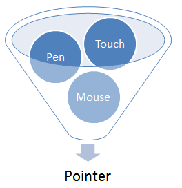
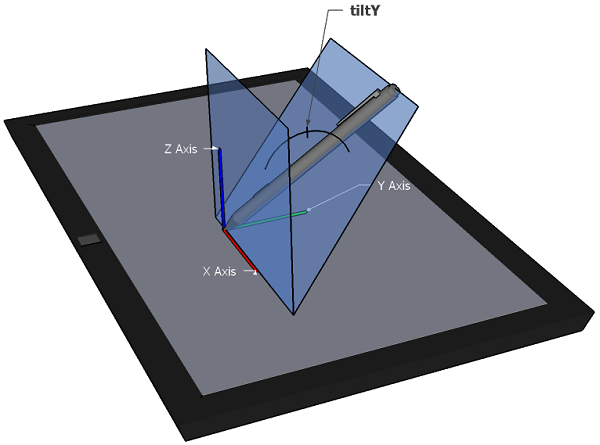
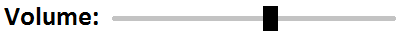

This document defines events and related interfaces for handling hardware agnostic pointer input from devices like a mouse, pen, or touchscreen. For compatibility with existing mouse-based content, this specification also describes a mapping to fire [DOM-LEVEL-3-EVENTS] Mouse Events for pointer device types other than mouse.
Status of This Document
This section describes the status of this document at the time of its publication. Other
documents may supersede this document. A list of current W3C publications and the latest revision
of this technical report can be found in the W3C technical reports
index at http://www.w3.org/TR/.
This document is based on a previous Member Submission by Microsoft Corporation with changes made based on the consensus of the Working Group. Current bugs and issues are managed in Bugzilla. Action items to be completed are tracked in Tracker.
This document was published by the Pointer Events Working Group as a Working Draft.
This document is intended to become a W3C Recommendation.
If you wish to make comments regarding this document, please send them to
public-pointer-events@w3.org
(subscribe,
archives).
All comments are welcome.
Publication as a Working Draft does not imply endorsement by the W3C Membership.
This is a draft document and may be updated, replaced or obsoleted by other documents at
any time. It is inappropriate to cite this document as other than work in progress.
Today, most [HTML5] content is used with and/or designed for mouse input. Those that handle input in a custom manner typically code to [DOM-LEVEL-3-EVENTS] Mouse Events. Newer computing devices today, however, incorporate other forms of input, like touchscreens or pen input. Event types have been proposed for handling each of these forms of input individually. However, that approach requires a step function in opportunity cost to authors when adding support for a new input type. This often creates a compatibility problem when content is written with only one device type in mind. Additionally, for compatibility with existing mouse-based content, most user agents fire Mouse Events for all input types. This makes it ambiguous whether a Mouse Event represents an actual mouse device or is being produced from another input type for compatibility, which makes it hard to code to both device types simultaneously.
To reduce the cost of coding to multiple input types and also to help with the above described ambiguity with Mouse Events, this specifications defines a more abstract form of input, called a pointer. A pointer can be any point of contact on the screen made by a mouse cursor, pen, touch (including multi-touch), or other pointing input device. This model makes it easy to write sites and applications that work well no matter what hardware the user has. For scenarios when device-specific handling is desired, this specification also defines properties for inspecting the device type which produced the event. The primary goal is to provide a single set of events and interfaces that allow for easy authoring for cross-device pointer input while still allowing for device-specific handling when necessary.

Fig. 1A pointer is a hardware agnostic representation of input devices that can target a specific coordinate (or set of coordinates) on a screen.
The events for handling generic pointer input look a lot like those for mouse: pointerdown, pointermove, pointerup, pointerover, pointerout, etc. This facilitates easy content migration from Mouse Events to Pointer Events.
Pointer Events provide all the usual properties present in Mouse Events (client coordinates, target element, button states, etc.) in addition to new properties for other forms of input: pressure, contact geometry, tilt, etc. So authors can easily code to Pointer Events and their content just works no matter what input hardware is being used.
2. Conformance
As well as sections marked as non-normative, all authoring guidelines, diagrams, examples,
and notes in this specification are non-normative. Everything else in this specification is
normative.
The key words must, must not, required, should, should not, recommended, may,
and optional in this specification are to be interpreted as described in [RFC2119].
A unique identifier for the pointer causing the event. This identifier must be unique from all other active pointers at the time. A user agent may recycle previously retired values for pointerId from previous active pointers, if necessary.
If the device producing the event is a mouse, then the pointerIdmust be 1. Device types other than mouse must not have a pointerId of 1.
The width (magnitude on the X axis), in CSS pixels (see [CSS21]), of the contact geometry of the pointer. This value may be updated on each event for a given pointer. For devices which have a contact geometry but the actual geometry is not reported by the hardware, a default value may be provided by the user agent to approximate the geometry typical of that pointer type. Otherwise, the value must be 0.
The height (magnitude on the Y axis), in CSS pixels (see [CSS21]), of the contact geometry of the pointer. This value may be updated on each event for a given pointer. For devices which have a contact geometry but the actual geometry is not reported by the hardware, a default value may be provided by the user agent to approximate the geometry typical of that pointer type. Otherwise, the value must be 0.
The normalized pressure of the pointer input in the range of [0,1], where 0 and 1 represent the minimum and maximum pressure the hardware is capable of detecting, respectively. For hardware that does not support pressure, including but not limited to mouse, the value must be 1 when in the active buttons state and 0 otherwise.
The plane angle (in degrees, in the range of [-90,90]) between the Y-Z plane and the plane containing both the transducer (e.g. pen stylus) axis and the Y axis. A positive tiltX is to the right. tiltX can be used along with tiltY to represent the tilt away from the normal of a transducer with the digitizer. For devices that do not report tilt, the value must be 0.
The plane angle (in degrees, in the range of [-90,90]) between the X-Z plane and the plane containing both the transducer (e.g. pen stylus) axis and the X axis. A positive tiltY is towards the user. tiltY can be used along with tiltX to represent the tilt away from the normal of a transducer with the digitzer. For devices that do not report tilt, the value must be 0.

Fig. 3Negative tiltY.
Indicates the device type that caused the event (mouse, pen, touch, etc.). If a user agent is to fire a pointer event for a mouse, pen stylus, or touch input device, then the value of pointerTypemust be according to the following table:
Pointer Device Type
pointerType Value
Mouse
mouse
Pen Stylus
pen
Touch Contact
touch
If the device type cannot be detected by the user agent, then the value must be an empty string. If a user agent supports pointer device types other than those listed above, the value of pointerTypeshould be vendor prefixed to avoid conflicting names for different types of devices. Future specifications may provide additional normative values for other device types.
Some pointer devices, such as mouse or pen, support multiple buttons. In the [DOM-LEVEL-3-EVENTS] Mouse Event model, each button press produces a mousedown and mouseup event. To better abstract this hardware difference and simplify cross-device input authoring, Pointer Events do not fire overlapping pointerdown and pointerup events for chorded button presses (depressing an additional button while another button on the pointer device is already depressed).
Instead, chorded button presses can be detected by inspecting changes to the button and buttons properties. The button and buttons properties are inherited from the [DOM-LEVEL-3-EVENTS] MouseEvent interface. In order to facilitate differentiating button state transitions in any pointer event (and not just pointerdown and pointerup), the button property takes on a new value when no mouse buttons are depressed:
Device Button State
button
buttons
Mouse move with no buttons pressed
-1
0
Left Mouse, Touch Contact, Pen contact (with no modifier buttons pressed)
0
1
Middle Mouse
1
4
Right Mouse, Pen contact with barrel button pressed
2
2
X1 (back) Mouse
3
8
X2 (forward) Mouse
4
16
Pen contact with eraser button pressed
5
32
3.1.2 The Primary Pointer
In a multi-pointer (e.g. multi-touch) scenario, the primary pointer is used to identify a master pointer amongst the set of active pointers. This pointer is the one that will produce compatibility mouse events. It is also useful when single-pointer interaction is desired by an author.
The primary pointer is indicated on events by a value of true for the isPrimary property.
3.1.2.1 Determining the primary pointer
When dispatching a pointer event, a pointer is considered primary if:
The pointer represents a mouse device.
The pointer represents a primary touch input.
The pointer represents a primary pen input.
primary touch input
A pointer representing touch input is considered the primary touch input if its pointerdown event was dispatched when no other active pointers representing touch input existed.
primary pen input
A pointer representing pen input is considered the primary pen input if its pointerdown event was dispatched when no other active pointers representing pen input existed.
Note
In some platforms, the primary pointer is determined using all active pointers on the device including those not targeted at the user agent (e.g. in another application). This means it is possible for the user agent to fire pointer events in which no pointer is marked as the primary pointer. For example, if the first touch interaction is targeted outside the user agent and a secondary (multi-touch) touch interaction is targeted inside the user agent, then the user agent fires pointer events for the second contact with a value of false for isPrimary.
Initializes the isPrimary property of the PointerEvent object.
The PointerEventInit dictionary is used by the PointerEvent interface's constructor to provide a mechanism by which to construct untrusted (synthetic) pointer events. It inherits from the MouseEventInit dictionary defined in [UI-EVENTS]. See Example 4 for sample code demonstrating how to dispatch an untrusted pointer event.
3.2 Pointer Event Types
3.2.1 List of Pointer Events
This section is non-normative.
The following table provides a summary of the event types defined in this specification.
Event Type
Sync/Async
Bubbles
Cancellable
Trusted proximal event target types
Event object interface
Default Action
pointerdown
Sync
Yes
Yes
Document, Element
PointerEvent
Varies: when the pointer is primary, all default actions of the mousedown event
pointerup
Sync
Yes
Yes
Document, Element
PointerEvent
Varies: when the pointer is primary, all default actions of mouseup
pointercancel
Sync
Yes
Yes
Document, Element
PointerEvent
None
pointermove
Sync
Yes
Yes
Document, Element
PointerEvent
Varies: when the pointer is primary, all default actions of mousemove
pointerover
Sync
Yes
Yes
Document, Element
PointerEvent
Varies: when the pointer is primary, all default actions of mouseover
pointerout
Sync
Yes
Yes
Document, Element
PointerEvent
Varies: when the pointer is primary, all default actions of mouseout
pointerenter
Sync
No
Yes
Document, Element
PointerEvent
Varies: when the pointer is primary, all default actions of mouseenter
pointerleave
Sync
No
Yes
Document, Element
PointerEvent
Varies: when the pointer is primary, all default actions of mouseleave
gotpointercapture
Async
Yes
No
Element
PointerEvent
None
lostpointercapture
Async
Yes
No
Element
PointerEvent
None
3.2.2 The pointerdown event
A user agent must dispatch this event when a pointer enters the active buttons state. For mouse, this is when the the device transitions from no buttons depressed to at least one button depressed. For touch, this is when physical contact is made with the digitizer. For pen, this is when the stylus makes physical contact with the digitizer.
For input devices that do not support hover, a user agent must also fire a pointerover event preceding the pointerdown event.
Note
For mouse (or other multi-button pointer devices), this means pointerdown and pointerup are dispatched differently than mousedown and mouseup. See chorded buttons for more information.
3.2.3 The pointerup event
A user agent must dispatch this event when a pointer leaves the active buttons state. For mouse, this is when the the device transitions from at least one button depressed to no buttons depressed. For touch, this is when physical contact is removed from the digitizer. For pen, this is when the pen is removed from physical contact with the digitizer.
For input devices that do not support hover, a user agent must also fire a pointerout event after firing the pointerup event.
Note
For mouse (or other multi-button pointer devices), this means pointerdown and pointerup are dispatched differently than mousedown and mouseup. See chorded buttons for more information.
3.2.4 The pointercancel event
A user agent must dispatch this event in the following circumstances:
The user agent has determined that a pointer is unlikely to continue to produce events (for example, because of a hardware event).
After having fired the pointerdown event, the pointer is subsequently used to manipulate the page viewport (e.g. panning or zooming).
A user agent must also fire a pointerout event after firing the pointercancel event.
Note
This section is non-normative.
Examples of scenarios in which a user agent might determine that a pointer is unlikely to continue to produce events include:
A device's screen orientation is changed while a pointer is active.
The user inputs a greater number of simultaneous pointers than is supported by the device.
The user agent interprets the input as accidental (for example, the hardware supports palm rejection).
Methods for changing the device�s screen orientation, recognizing accidental input, or using a pointer to manipulate the viewport (e.g. panning or zooming) are out of scope for this specification.
3.2.5 The pointermove event
A user agent must dispatch this event when a pointer changes coordinates, button state, pressure, tilt, or contact geometry (e.g. width and height).
3.2.6 The pointerover event
A user agent must dispatch this event when a pointing device is moved into the hit test boundaries of an element. A user agent must also dispatch this event prior to a pointerdown event for devices that do not support hover.
3.2.7 The pointerout event
A user agent must dispatch this event when any of the following occurs:
A pointing device is moved out of the hit test boundaries of an element
After firing the pointerup event for a device that does not support hover
After firing the pointercancel event
3.2.8 The pointerenter event
A user agent must dispatch this event when a pointing device is moved into the hit test boundaries of an element or one of its descendants, including as a result of a pointerdown event from a device that does not support hover. This event type is similar to pointerover, but differs in that it does not bubble.
Note
There are similarities between this event type, the mouseenter event described in [DOM-LEVEL-3-EVENTS], and the CSS :hover pseudo-class described in [CSS21]. See also the pointerleave event.
3.2.9 The pointerleave event
A user agent must dispatch this event when a pointing device is moved off of the hit test boundaries of an element and all of its descendants, including as a result of a pointerup event from a device that does not support hover. This event type is similar to pointerout, but differs in that it does not bubble and that it must not be dispatched until the pointing device has left the boundaries of the element and the boundaries of all of its children.
Note
There are similarities between this event type, the mouseleave event described in [DOM-LEVEL-3-EVENTS], and the CSS :hover pseudo-class described in [CSS21]. See also the pointerenter event.
3.2.10 The gotpointercapture event
A user agent must dispatch this event prior to dispatching the first event after pointer capture is set for a pointer. This event is dispatched to the element that is receiving pointer capture. Subsequent events for that pointer will be dispatched to this element. See setPointerCapture().
3.2.11 The lostpointercapture event
A user agent must dispatch this event after pointer capture is released for a pointer. This event must be dispatched prior to any subsequent events for the pointer after capture was released. This event is dispatched to the element from which pointer capture was removed. Subsequent events for the pointer follow normal hit testing mechanisms (out of scope for this specification) for determining the event target. See releasePointerCapture().
The event handler IDL attribute (see [HTML5]) for the lostpointercapture event type.
Methods
setPointerCapture
Sets pointer capture for the pointer identified by the argument pointerId to the element on which this method is invoked. Subsequent events for the pointer must always be targeted at this element.
Releases pointer capture for the pointer identified by the argument pointerId from the element on which this method is invoked. Subsequent events for the pointer follow normal hit testing mechanisms (out of scope for this specification) for determining the event target.
The maximum number of simultaneous touch contacts supported by the device. In the case of devices with multiple digitizers (e.g. multiple touchscreens), the value must be the maximum of the set of maximum supported contacts by each individual digitizer.
For example, suppose a device has 3 touchscreens, which support 2, 5, and 10 simultaneous touch contacts, respectively. The value of maxTouchPoints is 10.
6. Declaring candidate regions for default touch behaviors
For touch input, the default action of any and all pointer events must not be a manipulation of the viewport (e.g. panning or zooming).
Note
Touch manipulations are intentionally not a default action of pointer events. Removing this dependency on the cancellation of events facilitates performance optimizations by the user agent.
6.1 The touch-action CSS property
Name:
touch-action
Value:
auto | none | inherit
Initial:
auto
Applies to:
block-level elements, SVG elements
Inherited:
no
Percentages:
N/A
Media:
visual
Computed value:
Same as specified value.
The touch-action CSS property determines whether touch input may trigger default behavior supplied by user agent. This includes, but is not limited to, behaviors such as panning or zooming.
When a user touches an element, that element's touch-action property determines the default touch behaviors permitted for that contact, like panning or zooming. The touch behavior is then performed on the nearest ancestor element that is capable of that behavior, unless an intermediate ancestor element specifies that the behavior is not permitted.
Values have the following meanings:
auto
The user agent may determine the permitted touch behaviors, such as panning and zooming manipulations of the viewport, for touches that begin on the element.
none
Touches that begin on the element must not trigger default touch behaviors.
inherit
The property takes the same specified value as the property for the element's parent.
A user agent must dispatch a pointercancel (and subsequently a pointerout event) whenever all of the following are true:
The user agent has determined (via methods out of scope for this specification) that touch input is to be consumed for a default touch behavior,
a pointerdown event has been sent for the pointer, and
a pointerup or pointercancel event (following the above mentioned pointerdown) has not yet been sent for the pointer.
During the execution of the behavior (after sending the pointercancel and pointerout events), the user agent must not dispatch subsequent pointer events for the pointer.
7. Pointer Capture
Pointer capture allows the events for a particular pointer to be retargeted to a particular element other than the normal hit-test result of the pointer's location. This is useful in scenarios like a custom slider control (e.g. similar to the [HTML5] <input type="range"> control). Pointer capture can be set on the slider thumb element, allowing the user to slide the control back and forth even if the pointer slides off of the thumb.

Fig. 4Example of a custom slider control that chooses a value by sliding the thumb element back and forth. After pointerdown on the thumb, pointer capture can be used to allow the user to slide the thumb even if the pointer drifts off of it.
7.1 Setting Pointer Capture
Pointer capture is set on an element by calling the element.setPointerCapture(pointerId) method. When this method is called, a user agent must run the following steps:
If the pointerId provided as the method's argument does not match any of the active pointers, then throw a DOMException with the name InvalidPointerId.
If the pointer is not in the active buttons state, then terminate these steps.
Until pointer capture is released, set the target property of all future pointer and compatibility mouse events for the specified pointerId to the Element on which this method was invoked.
Until pointer capture is released, set the relatedTarget property of all future pointer and compatibility mouse events for the specified pointerId to null.
Fire a gotpointercapture event at the Element on which this method was invoked.
7.2 Releasing Pointer Capture
Pointer capture is released on an element explicitly by calling the element.releasePointerCapture(pointerId) method. When this method is called, a user agent must run the following steps:
If the pointerId provided as the method's argument does not match any of the active pointers, then throw a DOMException with the name InvalidPointerId.
If pointer capture is not currently set for the specified pointer, then terminate these steps.
For all future pointer and compatibility mouse events for the specified pointerId, resume setting the target property to the hit-test results (out of scope for this specification) for the pointer.
Fire a lostpointercapture event at the Element on which this method was invoked.
7.3 Implicit Release of Pointer Capture
Immediately after firing the pointerup event, a user agent must run the steps as if the releasePointerCapture() method has been called with an argument equal to the pointerId property of the pointerup event just dispatched.
8. Compatibility Mapping with Mouse Events
The vast majority of web content existing today codes only to Mouse Events. The following describes the algorithm for how a user agent may map generic pointer input to mouse events for compatibility with this content. Unless otherwise noted, the target of any mapped mouse event may be the same as the target for the pointer event from which it was mapped.
Authors can prevent the production of compatibility mouse events by cancelling the pointerdown event.
The compatibility mapping with mouse events are an optional feature of this specification. User agents are encouraged to support the feature for best compatibility with existing legacy content. User agents that do not support compatibility mouse events are still encouraged to support the click event (see the note below).
In user agents that support firing click, calling preventDefault during a pointer event typically does not have an effect on whether click is fired or not. Because it is not a compatibility mouse event, user agents typically fire click for all pointing devices, including pointers that are not primary pointers.
8.1 Mapping for devices that support hover
Whenever a user agent is to dispatch a pointer event from for device that supports hover, it may run the following steps:
If the isPrimary property for the pointer event to be dispatched is false then dispatch the pointer event and terminate these steps.
Dispatch the pointer event.
If the pointer event dispatched was pointerdown and the event was cancelled, then set the PREVENT MOUSE EVENT flag.
If the pointer event dispatched was pointerover,
dispatch a mouseover event, and
if the pointer has been moved onto the boundaries of an element or one of its descendants then dispatch a mouseenter event.
If the pointer event dispatched was pointerout
dispatch a mouseout event, and
if the pointer has been moved out of the boundaries of an element and all of its descendants then dispatch a mouseleave event.
If the PREVENT MOUSE EVENT flag is not set and the pointer event dispatched was:
pointerdown, then dispatch a mousedown event.
pointermove, then dispatch a mousemove event.
pointerup, then dispatch a mouseup event.
pointercancel, then dispatch a mouseup event at the window.
If the pointer event dispatched was pointerup or pointercancel, clear the PREVENT MOUSE EVENT flag.
Note
Mouse events can only be prevented when the pointer is down. Hovering pointers (e.g. a mouse with no buttons pressed) cannot have their mouse events prevented. And, the mouseover and mouseout events are never prevented (even if the pointer is down).
8.2 Mapping for devices that do not support hover
Some devices, such as most touchscreens, do not support hovering a coordinate (or set of coordinates) while not in the active state. Much existing content coded to mouse events assumes that a mouse is producing the events and thus certain qualities are generally true:
The input can hover independently of activation (e.g. moving a mouse cursor without any buttons pressed)
The input will likely produce the mousemove event on an element before clicking it
This requires that user agents provide a different mapping for these types of input devices. Whenever a user agent is to dispatch a pointer event from a device that does not support hover, it may run the following steps:
If the isPrimary property for the pointer event to be dispatched is false then dispatch the pointer event and terminate these steps.
If the pointer event to be dispatched is pointerover and the pointerdown event has not yet been dispatched for this pointer, then dispatch a mousemove event.
Dispatch the pointer event.
If the pointer event dispatched was pointerdown and the event was cancelled, then set the PREVENT MOUSE EVENT flag.
If the pointer event dispatched was pointerover,
dispatch a mouseover event, and
if the pointer has been moved onto the boundaries of an element or one of its descendants then dispatch a mouseenter event.
If the pointer event dispatched was pointerout
dispatch a mouseout event, and
if the pointer has been moved out of the boundaries of an element and all of its descendants then dispatch a mouseleave event.
If the PREVENT MOUSE EVENT flag is not set and the pointer event dispatched was:
pointerdown, then dispatch a mousedown event.
pointermove, then dispatch a mousemove event.
pointerup, then dispatch a mouseup event.
pointercancel, then dispatch a mouseup event at the window.
If the pointer event dispatched was pointerup or pointercancel, clear the PREVENT MOUSE EVENT flag.
Note
Mouse events can only be prevented when the pointer is down. Hovering pointers (e.g. a mouse with no buttons pressed) cannot have their mouse events prevented. And, the mouseover and mouseout events are never prevented (even if the pointer is down).
9. Examples
This section is non-normative.
The following are example author code that demonstrates how the APIs in this specification might be used.
Example 1: Basic HTML5 Canvas painting application
<style>
/* Disable intrinsic user agent touch behaviors (such as panning or zooming) so
that all events are given to the application instead. */
html {
touch-action: none;
}
</style>
<canvas id="drawSurface" width="500px" height="500px" style="border:1px solid black;"></canvas>
<script type='text/javascript'>
window.addEventListener('load', function() {
var canvas = document.getElementById("drawSurface"),
context = canvas.getContext("2d");
if (window.navigator.pointerEnabled) {
canvas.addEventListener("pointermove", paint, false);
if(window.navigator.maxTouchPoints>1)
alert("Your user agent and hardware support multi-touch!");
}
else {
//Provide fallback for user agents that do not support Pointer Events
canvas.addEventListener("mousemove", paint, false);
}
function paint(event) {
if(event.buttons>0)
context.fillRect(event.clientX, event.clientY, 5, 5);
}
});
</script>
Example 2: Detecting the type of input from a user
window.addEventListener("pointerdown", detectInputType, false);
function detectInputType(event) {
switch(event.pointerType) {
case "mouse":
alert("You used a mouse!");
break;
case "pen":
alert("You used a pen stylus!");
break;
case "touch":
alert("You used touch!");
break;
default:
alert("Not sure what device was used!");
}
}
Example 3: Resizing an element to match the contact geometry
var event = new PointerEvent("pointerover",
{bubbles: true,
cancelable: true,
pointerId: 42,
pointerType: "pen"
clientX: 300,
clientY: 500
});
eventTarget.dispatchEvent(event);
10. Glossary
active buttons state
The condition when a pointer has a non-zero value for the buttons property. For mouse, this is when the device has at least one button depressed. For touch, this is when there is physical contact with the digitizer. For pen, this is when the pen has physical contact with the digitizer.
active pointer
Any touch contact, pen stylus, mouse cursor, or other pointer that can produce events. If it is possible for a given pointer (identified by a unique pointerId) to produce additional events, then that pointer is still considered active. Examples:
A mouse connected to the device is always active.
A touch contact on the screen is considered active.
If a touch contact or pen stylus is lifted beyond the range of the digitizer, then it is no longer considered active.
Note
In some platforms, the set of active pointers includes all pointer input to the device, including any that are not targeted at the user agent (e.g. another application).
cancelled event
An event whose default action was prevented by means of preventDefault(), returning false in an event handler, or other means as defined by [DOM-LEVEL-3-EVENTS] and [HTML5].
contact geometry
The bounding box of an input (most commonly, touch) on a digitizer. This typically refers to devices with coarser pointer input resolution than a single pixel. Some devices do not report this data at all.
digitizer
A type of input sensing device in which a surface can detect input which is in contact and/or in close proximity. Most commonly, this is the surface that sense input from touch contact or a pen stylus.
pointer
A hardware agnostic representation of input devices that can target a specific coordinate (or set of coordinates) on a screen, such as a mouse, pen, or touch contact.
user agent
A program, such as a browser or content authoring tool, normally running on a client machine, which acts on a user's behalf in retrieving, interpreting, executing, presenting, or creating content.
A. Acknowledgements
Many thanks to lots of people for their proposals and recommendations, some of which
are incorporated into this document.
Special thanks to those that helped pioneer the first edition of this model, including especially: Charu Chandiram, Peter Freiling, Nathan Furtwangler, Thomas Olsen, Matt Rakow, Ramu Ramanathan, Justin Rogers, Jacob Rossi, Reed Townsend, Steve Wright.